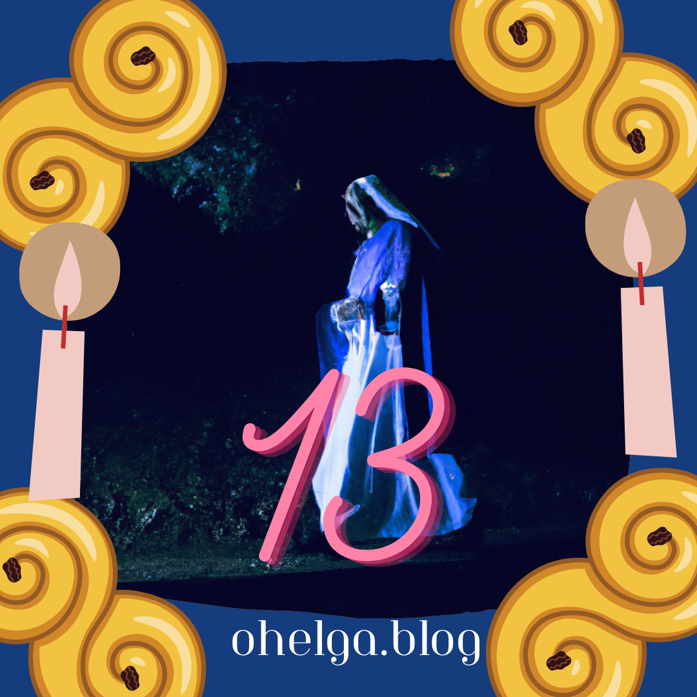

Fjolårets Lucia i julkalenderpodcasten sjöng med vibrato och pondus. Vuoden Lucialla on hauras ääni, joka on vienyt hänet pitkälle maailmalle. Päivän versio tulee Norjan kaikkien aikojen myydyimmältä joululevyltä. I dagens lucka: Sissel med O, Helga natt.
Fjolårets Lucia i julkalenderpodcasten sjöng med vibrato och pondus. Vuoden Lucialla on hauras ääni, joka on vienyt hänet pitkälle maailmalle. Päivän versio tulee Norjan kaikkien aikojen myydyimmältä joululevyltä. I dagens lucka: Sissel med O, Helga natt.
Kommentit / Kommentarer (2)
<p>Noterade att både Sissel Kyrkjebø och Nese Media sjöng den på svenska trots att båda är norska. Det finns också en norsk text, Kom julenatt, men den får man inte många träffar på av nån anledning. Vet inte om den svenska versionen är mer etablerad i Norge? Sissel Kyrkjebø sjunger i alla fall som en ängel, så det blir en stark 8:a. Visste ni att hon och Peter Jöback julturnerat ihop: https://www.youtube.com/watch?v=jxPEn3Ini-A </p>
<p>Ja nu måste vi bara konstatera att detta är en av de stora rösterna i borde och kanske i världen rent av.<br/>Betyget blir en stark 9:a </p>